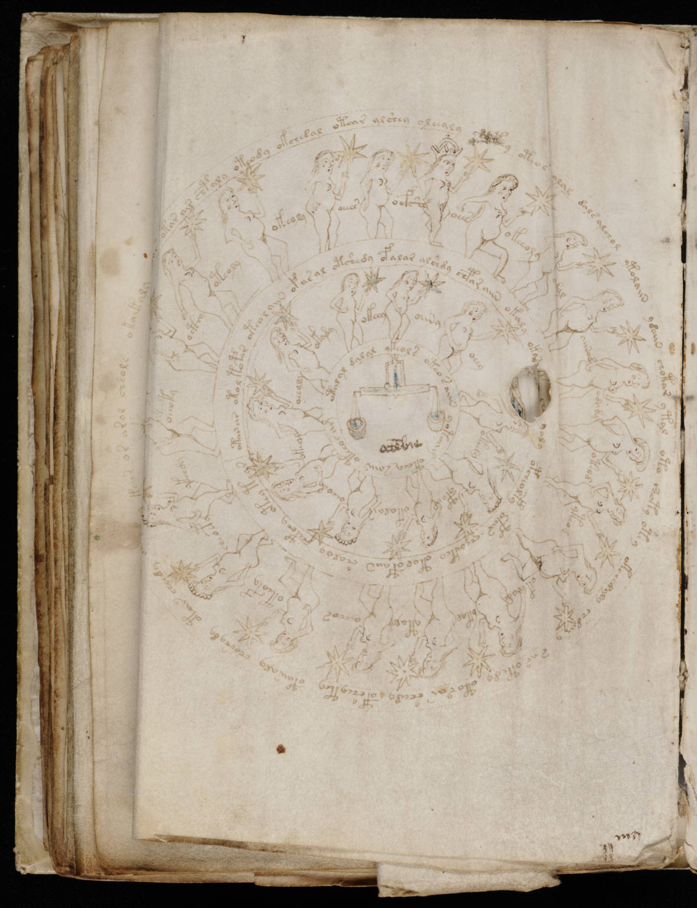

f72v1
1otar air chpaly oteody okchesal otear alshey oleealy sh*etey oteos alal dals alchol ytolaiin ydaiin chotar ytal oto shoty otey okchedyly shdary sar otedy oto rar shedy opsheytey opairaly choshydy otar cheedy otalaiin cheeky okalar ysr*y s ok*s*t* oteos alar 2oeeoty3octhy4oteoly5okeoly6oeees7ocfshy8oees9okeeoly10odal11aiinod12odody13oteod14yteod15okchedy16okyl17ytaly18ocheos19oteofy20cheoepy21ykeedy22otariir otoltopar oteol aiin ofas al otshedy ofalar alshdy chpar aiin okaly okaryaly opcheolfy opar cheoekey otolopaiin shaldy chepchy atey tear23oeeoly24okady25okeey26oiiny27oeey28okedy29ypain30okalair31oeeody32okeol33otalal dalal ykeols oteos aiin yotoam oteey saiin oteoos am
